생물분류기사(동물) (2017-05-07 기출문제)
1과목: 계통분류학
1. 다음 계통분류 형질 중 분자분류학적 접근에서 볼 때 가장 다양한 분류계급에서 적용이 가능한 것은?
- 플라보노이드
- 동위효소
- 셀룰로오즈
- 핵산
(정답률: 88%)

2. 다음과 같은 특징을 가진 동물군은?
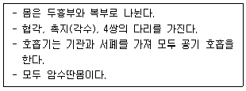
- 거미강
- 단판강
- 갑각강
- 곤충강
(정답률: 85%)
3. 삼엽충아문에 관한 설명으로 옳지 않은 것은?
- 화석생물로 캠브리아기와 오르도비스기에 번성했다가 고생대 말기에 절멸되었다.
- 삼엽충의 체제는 두부, 흉부, 즉 체간과 미부의 3부위로 나뉘어진다.
- 두부는 4개의 유합된 체절로 되어 있고, 1쌍의 촉각을 가지며, 납작한 방패모양의 갑각으로 덮여있다.
- 두부에는 입 뒤쪽에 1쌍의 부속지가 있으며, 체간과 미부에는 부속지가 없다.
(정답률: 59%)
4. 다음 동물 중 3배엽성이며, 장 외에는 체강이 없는 무체강 동물은?
- 자포동물
- 편형동물
- 선형동물
- 윤형동물
(정답률: 65%)
5. 구과식물 중 측백나무과에 관한 설명으로 가장 거리가 먼 것은?
- 상록성 교목 또는 관목이다.
- 입은 침엽 또는 작은 인편엽이다.
- 대생 또는 윤생한다.
- 화분은 원통형이고, 발아구는 구형으로 뚜렷하다.
(정답률: 48%)
6. 다음은 분류학의 정의에 관한 설명이다. ( )안에 가장 적합한 용어를 순서대로 옳게 나열한 것은?
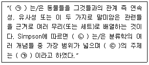
- ㉠ taxonomy, ㉡ systematics, ㉢ phylogenetics
- ㉠ classification, ㉡ systematics, ㉢ taxonomy
- ㉠ phylogenetics, ㉡ taxonomy, ㉢ classification
- ㉠ systematics, ㉡ taxonomy, ㉢ classification
(정답률: 66%)
7. 다음 중 후구 동물에 해당하는 것은?
- 갯고사리(바다나리)
- 선충
- 플라나리아
- 다슬기
(정답률: 54%)
8. 다음은 Mayr가 정의한 것이다. ( ) 안에 가장 적합한 것은 ?
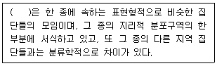
- 변종
- 아종
- 깃대종
- 품종
(정답률: 87%)
9. 돌좀목(archaeognatha)의 특징으로 거리가 먼 것은?
- 몸이 일반적으로 납작하고 길며, 인편이 없다.
- 겹눈은 크고, 서로 접해 있으며 홑눈이 있다.
- 큰 턱은 1관절로 머리에 붙어있다.
- 작은턱수염은 길고 7 마디이며, 아랫입술수염은 짧고 3마디이다.
(정답률: 44%)
10. 부족강(Pelecypoda)에 관한 설명으로 가장 거리가 먼 것은?
- 입주위에는 보통 순판이 있어서 입으로 먹이를 모아주는 구실을 한다.
- 두부는 매우 작고, 외투강과 아가미는 매우 크다.
- 신경계는 좌우대칭이며, 내장신경은 퇴화의 경향이 있지만, 두부신경은 잘 발달한다.
- 순환계는 개방형이고, 심장은 2심방 1심실로 되어있다.
(정답률: 60%)
11. 국화아강에 속하는 식물 중 자방상위이며, 잎은 대생 또는 윤생, 내사부가 있으며, 꽃은 방사상칭, 수술수는 꽃잎수와 동일한 특징을 보이는 목은?
- 용담목
- 칼리세라목
- 초롱꽃목
- 국화목
(정답률: 56%)
12. 다음의 [보기]가 설명하고 있는 종의 개념은?
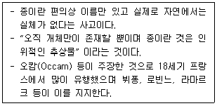
- 진화적 종개념
- 유명론적 종개념
- 유형적 종개념
- 분자생물학적 종개념
(정답률: 83%)
13. 아프리카에서 말라리아를 매개하는 모기인 Anophleles gambiae는 염색체 구조 연구를 통해 여러 종으로 구분되었다. 이 때 종을 구분하는데 사용된 분류학적 형질로 가장 적합한 것은?
- 형태적 형질
- 생리적 형질
- 행동적 형질
- 지리적 형질
(정답률: 69%)
14. 다음은 식물분류의 명명규약에 관한 설명이다. ( )안에 공통으로 들어갈 가장 적합한 것은?
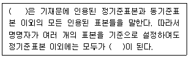
- 신기준표본(neotype)
- 동가기준표본(syntype)
- 종기준표본(paratype)
- 동소기준표본(topotype)
(정답률: 70%)
15. 다음 중 연체동물의 특징으로 가장 적합한 것은?
- 골격은 규질이나 석회질의 골편으로 되어 있다.
- 산만신경계를 가지며, 소화계는 단순하다.
- 체강은 퇴화하여 심장의 주위에 국한되어 있다.
- 방사형 난할을 한다.
(정답률: 58%)
16. 다음은 어떤 진화의 종류에 가장 적합한 설명인가?
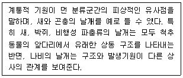
- 수렴진화
- 역진화
- 파생진화
- 생물학적 진화
(정답률: 84%)
17. 다음 중 목련과(Magnoliaceae)의 특성으로 거리가 먼 것은?
- 잎 : 호생, 단엽, 낙엽성 또는 상록성이고, 탁엽은 크고 어린 눈을 둘러싼다.
- 씨 : 실 모양의 주병에 의하여 열매에 붙고, 배는 크고, 배유는 없다.
- 열매 : 골돌과, 시과, 취과, 드물게 장과이다.
- 꽃 : 신장된 화탁 위에 수술 다수와 암술다수가 나선상으로 배열된다.
(정답률: 60%)
18. 동물 계통관계를 연구하는 체계적인 방법 중 분기론(cladistics) 이론을 처음으로 제시한 사람은?
- Hennig
- Darwin
- Mayr
- Simpson
(정답률: 64%)
19. 다형종(polytypic species)이 의미하는 것으로 가장 적합한 것은?
- 변태하는 생물 종
- 성적이형을 가진 종
- 계절적 변이가 있는 종
- 여러 아종을 가진 종
(정답률: 82%)
20. 다음 분류학적 형질 중 생태적 형질에 해당되는 것은?
- 대사적 요소
- 구애행위
- 기생충
- 일반적 생물지리학적 분포양상
(정답률: 58%)
2과목: 환경생태학
21. 편리공생과 상리공생으로 구분할 때, 다음 중 편리공생 관계로 가장 적합한 것은?
- 황로와 소
- 악어와 악어새
- 개미와 균류
- 녹조류와 짚신벌레
(정답률: 71%)
22. 개체군의 생장곡선이 J자와 같은 모양이 아니라 S자와 같은 모양을 나타내는 요인과 거리가 먼 것은?
- 먹이부족
- 공간부족
- 노폐물의 증가
- 천적 및 질병의 감소
(정답률: 80%)
23. 다음 중 순위제, 세력권(텃세)과 가장 관련이 깊은 것은?
- 공동 사멸
- 번식효과 억제
- 경쟁의 최소화
- 공생의 기피현상
(정답률: 83%)
24. 다음 중 산성비에 대한 설명으로 옳지 않은 것은?
- 산성비는 공기 중으로 배출된 산성물질(아황산가스, 질소산화물 등)이 대기 중에서 수증기와 결합하여 생긴다.
- 산성비는 일반적으로 pH 9이하인 비를 말한다.
- 식물 잎에 반점을 만들고 광합성을 저해하며 꽃잎이 탈색되는 등 식물에 피해를 준다.
- 중국으로부터 대기오염물질 확산과 황사현상은 우리나라에 산성비의 요인으로도 작용한다.
(정답률: 79%)
25. 사막화의 주요 증상으로 거리가 먼 것은?
- 지하수위가 낮아진다.
- 토양염류의 농도가 낮아진다.
- 지표수가 감소한다.
- 토양침식이 증가한다.
(정답률: 77%)
26. 특정 생태계 내의 총생산량(P)과 호흡량(R)과의 비를 구하면 생태계의 안정성 유무를 판단할 수 있는데, (P/R) ＞ 1 인 경우의 생태계에 대한 설명으로 가장 적합한 것은?
- 생산성은 크나 불안정한 생태계이다.
- 소비적이며 불안정한 생태계이다.
- 생산성은 크며 안정한 생태계이다.
- 소비적이나 안정한 생태계이다.
(정답률: 76%)
27. 자연환경에서 생물학적, 생리학적, 행동학적 상호작용의 모든 면을 포함하는 생물들의 역할을 의미하는 것으로 가장 적합한 것은?
- Pyramid of biomass
- Ecological niche
- BOD
- Guild
(정답률: 79%)
28. 작은 상록관목과 나무들이 밀집해 서식하는 채퍼랠(chaparral)이 나타나는 생물군계로 가장 적합한 것은?
- 지중해성 관목림
- 온대낙엽수림
- 타이가
- 툰드라
(정답률: 73%)
29. 대부분의 무기양분을 식물체가 보유하고 있으며, 특히 뿌리가 얕은 지표에 집중적으로 매트처럼 분포하는 지역은?
- 열대우림
- 사막
- 초원
- 툰드라
(정답률: 55%)
30. 다음은 툰드라의 식생형에 관한 설명이다. ( )안에 가장 적합한 것은?
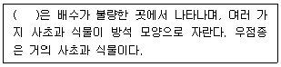
- 방석형
- 덤불형
- 광엽초본형
- 협엽초본형
(정답률: 56%)
31. 복사와 관련된 법칙 중 “주어진 온도에서 이론상 최대에너지를 복사하는 가상적인 물체를 흑체라 할 때, 흑체복사를 하는 물체에서 방출되는 복사에너지는 절대온도의 4승에 비례한다”는 것에 해당하는 것은?
- 헨리의 법칙
- 프랑크의 법칙
- 플레밍의 법칙
- 스테판-볼츠만의 법칙
(정답률: 69%)
32. Shannon index(H)로 흔히 계산할 수 있는 지수는? (단, H= -∑Pi (log Pi), Pi는 i 번째 종의 개체수 비율(ni/N))
- 유사도(Similarity) 지수
- 중요도(Importance) 지수
- 다양도(Diversity)
- 빈도(Frequency)
(정답률: 60%)
33. 다음 중 환경요인에 의하여 조절되지 않는 개체군 생장을 나타내는 곡선은?
- S형(S-shaped)
- J형(J-shaped)
- L형(L-shaped)
- M형(M-shaped)
(정답률: 78%)
34. 생태계 에너지에 관한 일반사항 중 옳지 않은 것은?
- 열역학 법칙이 에너지 흐름을 지배한다.
- 광합성 과정에서 고정된 에너지는 2차 생산이다.
- 수생태계에서 온도, 빛, 영양소가 1차 생산을 조절한다.
- 1차 생산력은 2차 생산을 제한한다.
(정답률: 74%)
35. 다음 중 생물권에서 연간 유입되는 태양 방사 에너지의 소산율이 가장 낮은 것은?
- 광합성
- 직접적 열 전환
- 반사
- 증발, 강우
(정답률: 60%)
36. 산성비가 생태계에 미치는 영향에 대한 설명 중 옳지 않은 것은?
- 호수가 산성화되면 호수 밑바닥의 알루미늄과 같은 금속이온의 용출이 증가하여 어류에 영향을 미친다.
- 산성비는 토양의 산성화를 초래하고 인간을 비롯한 종속영양체의 먹이원에 중대한 위협을 준다.
- 호수의 산성화로 인해 호수 생물의 종조성이 바뀌고, 복잡화 되어, 호수의 물이 혼탁해져 깨끗한 호수와 뚜렷하게 구별된다.
- 토양에 산성비가 스며들 경우 토양층의 칼륨, 칼슘, 마그네슘과 같은 양이온이 용탈된다.
(정답률: 70%)
37. 다음 중 생태계 구성인자의 연결로 옳지 않은 것은?
- 생산자 – 독립영양생물
- 1차 소비자 – 종속 영양생물
- 동물 – 종속 영양생물
- 분해자 – 독립 영양생물
(정답률: 88%)
38. 다음 수질오염방지시설 중 물리적 처리시설에 해당하는 것은?
- 침사시설
- 살균시설
- 침전물 개량시설
- 이온교환시설
(정답률: 70%)
39. 다음 ( )안에 가장 적합한 용어는?
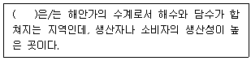
- 맹그로브 늪
- 천해대
- 하구
- 외양대
(정답률: 75%)
40. 다음 설명하는 오염물질로 가장 적합한 것은?
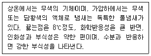
- 포스겐
- 폼알데하이드
- 이산화질소
- 이황화탄소
(정답률: 64%)
3과목: 형태학
41. 곤충의 말피기관(Malpighian tube)에 관한 설명으로 가장 적합한 것은?
- 곤충의 중장과 후장 사이에 있는 배설기관이다.
- 곤충의 음식물의 소화흡수가 이루어지는 소화기관이다.
- 곤충의 청각기관이다.
- 곤충의 후각기관이다.
(정답률: 73%)
42. 선인장과 목련 및 많은 단자엽 식물들에서 꽃잎은 꽃받침으로 변화하는 중간 단계에 있기 때문에 이들 사이의 구별이 불가능한 경우도 있는데, 이런 경우의 꽃잎을 무엇이라고 하는가?
- 심피
- 화통
- 화피편
- 화관
(정답률: 65%)
43. 불가사리가 조개를 잡아먹을 때 사용하는 구조로써, 그 끝에 흡반이 있는 구조는?
- 측관(lateral canal)
- 병낭(ampulla)
- 관족(tube feet)
- 천공판(madreporite)
(정답률: 75%)
44. 아래 그림과 같은 형태를 갖는 웅예 명칭은?
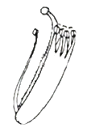
- 양체웅예 (diadelphous)
- 이강웅예 (didynamous)
- 단체웅예 (monadelphous)
- 취약웅예 (syngenesious)
(정답률: 65%)
45. 배주(ovule)의 수정 후, 주피(integuments)는 무엇으로 발달하는가?
- 주공(micropyle)
- 배(embryo)
- 종피(seed coat)
- 주심(nucellus)
(정답률: 66%)
46. 어류의 지느러미 구분에 해당하지 않는 것은?
- 꼬리지느러미
- 옆지느러미
- 등지느러미
- 배지느러미
(정답률: 73%)
47. 파충류에 관한 설명으로 가장 거리가 먼 내용은?
- 보통 2쌍의 다리를 가지며 발은 5개의 발가락을 가진다.
- 피부에는 샘이 거의 없다
- 심장은 성체에서 전신이고, 뇌의 앞 쪽에 시엽에 있고, 1쌍의 뇌신경이 있다.
- 허파 호흡을 하고, 아가미가 없으나, 배 단계에는 새궁이 있다.
(정답률: 58%)
48. 다음 [보기] 중 엽서(phyllotaxis)에 관한 설명으로 옳은 것은?
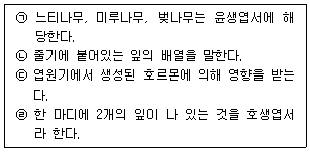
- ㉠, ㉡
- ㉢, ㉣
- ㉡, ㉢
- ㉠, ㉣
(정답률: 60%)
49. 사람의 몸에 기생하는 간디스토마(Chlonorchis sinensis)의 생활사에서 감염된 물고기를 사람이 먹게 되었을 때 부화되는 유생으로 가장 적합한 것은?
- 미라시디움(miracidium)
- 레디아(redia)
- 세르카리아(cercaria)
- 메타세르카리아(meracercaria)
(정답률: 61%)
50. 세포벽에 대한 [보기]의 설명 중 옳은 것은?
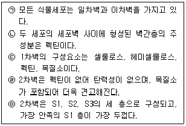
- ㉠, ㉡
- ㉢, ㉣
- ㉡, ㉣
- ㉢, ㉤
(정답률: 52%)
51. 치아에 관한 설명으로 옳지 않은 것은?
- 대부분의 척추동물은 골질치아를 갖는다.
- 칠성장어는 각질치아를 가진다.
- 진골어류의 치아는 조생치아를 가진다.
- 무미류와 유미류 및 대부분의 도마뱀은 측생치아를 가진다.
(정답률: 60%)
52. 무성생식의 기작에 포함되지 않는 것은?
- 출아
- 재생
- 체외수정
- 단위생식
(정답률: 79%)
53. 다음은 오래된 줄기의 목재에 관한 설명이다. ( )안에 가장 적합한 것은?
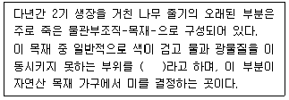
- 환재
- 심재
- 추재
- 춘재
(정답률: 73%)
54. 많은 단자엽 식물의 표피(특히, 벼와 사초의 표피)에서 잎의 수축과 펴짐에 관여하는 특수세포는?
- 장세포
- 규산세포
- 우두상세포
- 코르크세포
(정답률: 66%)
55. 다음은 열매의 종류에 관한설명이다. ( )안에 적합한 것은?
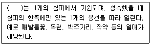
- 시과
- 골돌과
- 협과
- 다화과
(정답률: 59%)
56. 부속지골격(appendicular skeleton)에 속하지 않는 것은?
- 팔다리뼈
- 상악골(maxilla)
- 요대(pelvic girdle)
- 견대(pectoral girdle)
(정답률: 66%)
57. 뿌리의 끝부분(근단)에 있는 분열조직의 가운데에 있는 분열지연(또는 생장정지) 중심부 (quiescent center)에 관한 설명으로 옳지 않은 것은?
- 500~1,000개 정도의 세포로 구성되어 있고 반구형 또는 원반형이다.
- 상처를 입은 근단분열조직 및 근관 세포들을 대체하는 작용을 한다.
- 방사선과 독성물질 등의 환경교란에 대하여 강한 저항력을 갖고 있다.
- 세포들은 세포주기 중에서 G2 시기에 오랫동안 머물며 하루에 1번 이상 분열한다.
(정답률: 52%)
58. 아래의 표는 포유동물의 호흡에 대한 설명이다. 호흡의 순서를 옳게 나열한 것은?
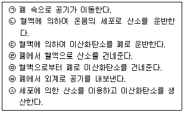
- ㉠→㉣→㉡→㉢→㉦→㉥→㉤
- ㉠→㉤→㉣→㉢→㉦→㉡→㉥
- ㉠→㉢→㉣→㉡→㉤→㉦→㉥
- ㉠→㉣→㉡→㉦→㉢→㉤→㉥
(정답률: 84%)
59. 육상지렁이에서 점액질 고치(cocoon)가 분비되는 곳은?
- 위구절(peristomium)
- 환대(clitellum)
- 강모(seta)
- 암생식공(famale genital pore)
(정답률: 72%)
60. 세포들이 밀집하게 연결되어 동물 몸 안팎은 물론 내부 기관과 체강을 둘러싸는 조직은?
- 결합조직
- 상피조직
- 근육조직
- 신경조직
(정답률: 67%)
4과목: 보존 및 자원생물학
61. 다음은 개체군 보호를 위한 설명이다. ( ) 안에 가장 적합한 것은?
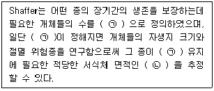
- ㉠ 최소존속개체군(minimum viable population),
㉡ 최소동태면적(minimum dynamic area) - ㉠ 최대존속개체군(maximum viable population),
㉡ 최소동태면적(minimum dynamic area) - ㉠ 최소존속개체군(minimum viable population),
㉡ 최대정체면적(maximum stagnant area) - ㉠ 최대존속개체군(maximum viable population),
㉡ 최대정체면적(maximum stagnant area)
(정답률: 86%)
62. 국제자연보전연맹(International Union of Biological Conservation: IUCN)에서 정한 생물종의 평가기준 중 가장 절멸에 이르기 쉬운 범주는?
- 위험종(endangered)
- 보존종(Preserved)
- 취약종(vulnerable)
- 최소관심종(least concern)
(정답률: 70%)
63. 멸종속도 및 고유종에 관한 일반적인 설명으로 가장 거리가 먼 것은?
- 인류 역사상 멸종은 도서지역에 비해 대륙이 아주 심각하게 발생했다.
- 지리적으로 고립된 지역에서 고유종의 비율이 높다.
- 마다가스카르 섬은 고유종의 비율이 높다.
- 열대 습윤 산림지대에서 고유종의 비율이 높다.
(정답률: 77%)
64. 생물 다양성 보호를 위해 국제적인 공동 협력이 필요한 이유로 가장 거리가 먼 것은?
- 종이나 생태계를 위협하는 모든 문제들은 항상 국제적으로만 발생한다.
- 종은 흔히 국가간의 장벽을 넘어 이동한다.
- 생물 다양성의 이익은 국제적인 중요성을 가진다.
- 생물을 수출하는 국가에서는 수출량을 충당하기 위해 자원의 과도한 이용이 초래될 수 있다.
(정답률: 81%)
65. 우리나라 하천 생태계에서 생물다양성 감소의 직접적인 원인과 가장 거리가 먼 것은?
- 골재 채취
- 선진국 수의 증가
- 유역의 교란
- 유해 독극물 유출
(정답률: 87%)
66. 초기(16세기 중엽)식물원은 이탈리아의 파도바, 피사 등지에서 볼 수 있다. 당시 식물원은 주로 어떤 역할을 하였는가?
- 약초원
- 수목원
- 식물분류
- 관상용
(정답률: 73%)
67. 개체군 보전 시 소개체군의 문제와 가장 거리가 먼 것은?
- 유전변이성의 소실
- 진화적 유연성 소실
- 새로운 개체군의 용이한 조성
- 성비의 불균형
(정답률: 79%)
68. 다음에서 설명한 기작과 가장 관련이 깊은 이론은?
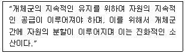
- 경쟁배타의 원리
- 내성의 법칙
- 환경결정론
- 최적화 이론
(정답률: 65%)
69. 어류 개체군 조절에 의한 훼손 호수의 복원방법으로 가장 거리가 먼 것은?
- 어류군집조성은 포식-피식 관계를 통하여 부영양화과정에 영향을 줄 수있다.
- 부영양화된 호수에서 조류를 먹은 동물성 플라크톤이 어류에 의해 소비되면 조류가 생장하는 것이 잘 나타나지 않는다.
- 포식성 어류를 호수에 넣어주면 동물성 플라크톤의 개체수와 갑각류 개체군이 감소한다.
- 어류 개체군을 조절하여 수질을 개선하는 것을 하향식(top-down)조절이라고 한다.
(정답률: 53%)
70. 보존 대상종을 구분하여 설명한 것으로 옳지 않은 것은?
- 희귀종(rare) : 흔히 제한된 지리적 분포나 낮은 개체군 밀도로 인하여 개체의 수가 작은 종으로, 당장은 절멸위험에 직면하지 않겠지만 개체수 부족으로 위험종이 될 가능성이 존재한다.
- 취약종(vulnerable): 보존 대상에 속할 것으로 짐작되나 충분한 정보가 없어서 특정 범주로는 규정되지는 않지만, 전에 서식하던 장소나 기타의 가능지역을 조사해 보아도 발견 가능성이 거의 없는 종을 의미한다.
- 위험종(endangered) : 가까운 장래에 절멸될 가능성이 큰 종으로 현재의 상황이 지속되면 종의 생존이 어려울 정도로 개체수가 감소된 종도 포함된다.
- 절멸종(extinct) : 자연계에 더 이상 존재하지 않는 것으로 알려진 종을 의미한다.
(정답률: 77%)
71. 종분화 및 멸종에 큰 영향을 미치는 원인으로 보기에 가장 어려운 것은?
- 대륙이동
- 혜성의 지구 충돌
- 서식지에서 미기후
- 과도한 남획 등 인간의 활동
(정답률: 74%)
72. 다음 ( )안에 가장 적합한 용어로 짝지어진 것은?
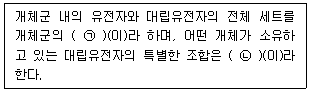
- ㉠ 유전자형(genotype), ㉡ 유전자풀(gene pool)
- ㉠ 유전자풀(gene pool), ㉡ 유전자형(genotype)
- ㉠ 유전자지도(gene map), ㉡ 유전자관계(geno-relation)
- ㉠ 유전자관계(geno-relation), ㉡ 유전자지도(gene map)
(정답률: 79%)
73. 어떤 두 종간의 상호작용에 관한 설명 중 양쪽 개체군의 생장이나 생존에 이익이 될 뿐만 아니라 그관계가 긴밀하여 어느 한 쪽이 없으면 자연상태에서는 서로 생존할 수 없는 관계를 무엇이라고 하는가?
- 상리공생(mutualism)
- 항생(antibiosis)
- 편리공생(commensalism)
- 기생(parasitism)
(정답률: 84%)
74. 지구상에는 지금까지 6번의 대량절멸(massive extinction)이 있었다. 이 중 95% 정도의 해양생물종을 포함한 동물과의 약 50%정도에 해당하는 생물종이 절멸한 것으로 추정되는 시기는?
- 데본기(Devonian)
- 백악기(Cretaceous)
- 트라이아스기(Triassic)
- 페름기(Permian)
(정답률: 69%)
75. 다음 중 지구온난화 증거와 가장 거리가 먼 것은?
- 폭염 빈도 증가
- 극지방의 빙하 증가
- 종 분포 범위 이동
- 개체군 감소
(정답률: 78%)
76. 생물다양성 보호라는 측면에서 볼 때, 우량품종의 작물이 보급됨에 따라 발생하는 주요 문제점으로 가장 적합한 것은?
- 보급 이전에 재배되던 재배품종이 사라진다.
- 수확량이 너무 많아 가격이 폭락한다.
- 우량 품종을 보급 받은 농민과 보급 받지 못한 농민 사이에 갈등이 생긴다.
- 우량 품종만을 재배하기 때문에 우량 품종의 유전자 변형이 심하게 나타난다.
(정답률: 79%)
77. 다음 중 종자은행의 활동에 있어 중추적인 기능을 수행하는 국제기구는?
- TA(생물분류협회)
- WWAA(세계야생생물거래보호협회)
- WBCCA(야생생물보전관리협회)
- CGIAR(국제농업연구자문단)
(정답률: 73%)
78. 생물 다양성을 보존하기 위한 국제적인 노력과 가장 관계가 먼 것은?
- 람사르 협약
- Convention on Biological Diversity
- 로테르담 협약
- Global Biodiversity Strategy
(정답률: 70%)
79. 지리적 환경인자에 관한 설명으로 옳지 않은 것은?
- 육상생태계에서는 환경조건 변이성은 연간 강우량과 월평균 최저기온이 중요한 인자이다.
- 맹그로브 습지 산호초는 육상생태계와 차별화된 생물상을 갖는다.
- 뚜렷한 지역구분과 성층현상은 호수와 큰 연못의 특징이다.
- 진달래속 식물들은 석회질성 토양에서 주로 생육한다.
(정답률: 66%)
80. 다음은 육상 생물군계 특성이다. ( )안에 가장 알맞은 것은?
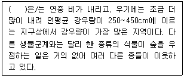
- 열대사바나
- 열대우림
- 차파렐
- 타이가
(정답률: 79%)
5과목: 자연환경관계법규
81. 환경정책기본법령상 “CO”의 대기환경기준 항목 측정을 위한 측정방법으로 가장 적합한 것은?
- 자외선형광법
- 화학발광법
- 비분산적외선분석법
- 자외선광도법
(정답률: 48%)
82. 자연공원법상 공원관리청이 자연공원을 효과적으로 보전하고 이용할 수 있도록 구분한 용도지구에 포함되지 않는 것은?(관련 규정 개정전 문제로 여기서는 기존 정답인 4번을 누르면 정답 처리됩니다. 자세한 내용은 해설을 참고하세요.)
- 공원자연환경지구
- 공원마을지구
- 공원자연보존지구
- 공원자연생태지구
(정답률: 44%)
83. 독도 등 도서지역의 생태계 보전에 관한 특별법상 특정도서 안에서 가축의 방목 등의 제한된 행위를 한 자에 대한 벌칙기준으로 옳은 것은? (단, 군사 · 항해 · 조난구호 행위 등 필요하다고 인정하는 행위 등은 제외)
- 7년 이하의 징역 또는 7천만원 이하의 벌금
- 5년 이하의 징역 또는 5천만원 이하의 벌금
- 3년 이하의 징역 또는 3천만원 이하의 벌금
- 1년 이하의 징역 또는 1천만원 이하의 벌금
(정답률: 53%)
84. 생물 다양성 보전 및 이용에 관한 법률상 환경부장관은 해양생태계의 보전 및 관리에 관한 법률에 따른 해양생물로서 해양에만 서식하는 해양생물을 제외한 외래생물 관리를 위한 기본계획을 수립하여야 하는데, 이에 관한 사항으로 옳지 않은 것은?
- 환경부장관은 외래생물 관리를 위한 기본계획을 10년마다 수립하여야 한다.
- 환경부장관은 외래생물관리계획을 수립할 때에는 관계 중앙행정기관의 장과 미리 협의하여야 한다.
- 환경부장관은 외래생물관리계획의 수립 또는 변경을 위하여 관계 중앙행정기관의 장 및 시·도지사에게 필요한 자료의 제출을 요청할 수 있다.
- 시·도지사는 외래생물관리계획에 따라 외래생물 관리를 위한 시행계획을 매년 수립·시행하여야 한다.
(정답률: 60%)
85. 생물다양성 보전 및 이용에 관한 법률상 국가는 아래 항목의 사업을 시행하는 지방자치단체 또는 관련 단체에 그 비용의 전부 또는 일부를 국고로 보조할 수 있는데, 그 해당사업으로 거리가 먼 것은? (단, 그 밖의 사항 등은 고려하지 않는다.)
- 생물다양성관리계약의 이행
- 생태계교란 생물 관리에 관한 사업
- 유해야생동물의 포획 장려사업
- 전문인력의 양성사업 및 교육 · 홍보 사업
(정답률: 61%)
86. 야생생물 보호 및 관리에 관한 법률상 이 법을 위반하여 야생동물을 포획할 목적으로 총기와 실탄을 같이 지니고 돌아다니는 자에 대한 벌칙 기준은?
- 3년 이하의 징역 또는 3천만원 이하의 벌금
- 2년 이하의 징역 또는 2천만원 이하의 벌금
- 1년 이하의 징역 또는 1천만원 이하의 벌금
- 5백만원 이하의 과태료
(정답률: 46%)
87. 환경정책기본법령상 하천의 수질 및 수생태계 기준 중 “1,2 디클로로에탄”의 기준값(mg/L)으로 옳은 것은? (단, 사람의 건강보호 기준)
- 0.01이하
- 0.02이하
- 0.03이하
- 0.⑤이하
(정답률: 54%)
88. 백두대간 보호에 관한 법률상 보호지역 중 완충구역에서 허용되지 아니하는 행위를 한자에 대한 벌칙기준으로 옳은 것은?
- 10년 이하의 징역 또는 1억원 이하의 벌금에 처한다.
- 7년 이하의 징역 또는 5천만원 이하의 벌금에 처한다.
- 5년 이하의 징역 또는 3천만원 이하의 벌금에 처한다.
- 3년 이하의 징역 또는 2천만원 이하의 벌금에 처한다.
(정답률: 60%)
89. 습지보전법상 습지보전을 위해 설치할 수 있는 시설 중 가장 거리가 먼 것은?
- 습지연구시설
- 습지준설복원시설
- 습지오염방지시설
- 습지생태관찰시설
(정답률: 70%)
90. 야생생물 보호 및 관리에 관한 법률 시행령상 환경부장관은 수렵동물의 지정 등을 위하여 야생동물의 종류 및 서식밀도 등에 대한 조사를 주기적으로 실시하여야 하는데, 그 최소한의 주기로 옳은 것은?
- 1년마다
- 2년마다
- 3년마다
- 4년마다
(정답률: 66%)
91. 독도 등 도서지역의 생태계 보전에 관한 특별법상 환경부장관은 특정도서의 자연생태계등을 보전하기 위하여 몇 년마다 특정도서보전기본계획을 수립하는가?
- 5년
- 10년
- 15년
- 20년
(정답률: 63%)
92. 다음은 자연환경보전법상 용어의 정의이다. ( )안에 알맞은 것은?
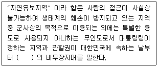
- 1년간
- 2년간
- 3년간
- 5년간
(정답률: 63%)
93. 습지보전법상 환경부장관 등이 습지보호지역안에서 규정에 위반한 행위를 하여 원상회복을 명하였으나 이를 위반한 자에 관한 벌칙기준으로 옳은 것은?
- 5년 이하의 징역 또는 5천만원 이하의 벌금에 처한다.
- 3년 이하의 징역 또는 3천만원 이하의 벌금에 처한다.
- 2년 이하의 징역 또는 2천만원 이하의 벌금에 처한다.
- 1년 이하의 징역 또는 1천만원 이하의 벌금에 처한다.
(정답률: 41%)
94. 다음은 환경정책기본법상 중권역환경관리위원회에 과한 사항이다 ( )안에 알맞은 것은?
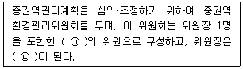
- ㉠ 15명이내, ㉡ 환경부차관
- ㉠ 15명이내, ㉡ 유역환경청장 또는 지방환경청장
- ㉠ 30명이내, ㉡ 환경부차관
- ㉠ 30명이내, ㉡ 유역환경청장 또는 지방환경청장
(정답률: 47%)
95. 야생생물 보호 및 관리에 관한 법률 시행규칙상 생물자원보전시설을 설치·운영하고자 하는 자가 그 시설을 등록하고자 할 때 갖추어야 할 각 요건(기준)으로 옳은 것은?
- 인력요건 : 생물자원과 관련된 분야의 석사이상 학위 소지자로서 해당 분야에서 1년 이상 종사한 자
- 인력요건 : 생물자원과 관련된 분야의 석사이상 학위 소지자로서 해당 분야에서 2년 이상 종사한 자
- 표본보전시설 : 60제곱미터 이상의 수장시설
- 열풍건조시설 : 10마력 이상의 건조스팀 발생시설
(정답률: 54%)
96. 국토기본법에 명시된 국토종합계획에 관한 설명으로 옳지 않은 것은?
- 국토교통부장관은 국토종합계획안을 작성하였을 때에는 공청회를 열어 일반 국민과 관계 전문가 등으로부터 의견을 들어야 하며, 공청회를 개최하고자 하는 때에는 공청회 개최 7일전까지 개최에 필요한 사항을 일간신문에 공고하여야 한다.
- 국토교통부 장관은 국토종합계획을 수립하거나 확정된 계획을 변경하고자 할 때에는 국토정책위원회와 국무회의의 심의를 거친 후 대통령의 승인을 받아야 한다.
- 국토 교통부장관은 국토종합계회그이 성과를 정기적으로 평가하고, 사회적, 경제적, 여건변화를 고려하여 5년마다 국토종합계획을 전반적으로 재검토하고 필요하면 정비하여야 한다.
- 심의안을 받은 관계중앙행정기관의 장 및 시·도지사는 특별한 사유가 없으면 심의안을 받은 날부터 30일 이내에 국토교통부 장관에게 의견을 제시하여야 한다.
(정답률: 35%)
97. 국토의 계획 및 이용에 관한 법률상 토지의 이용실태 및 특성, 장래의 토지이용 방향 등을 고려하여 구분한 용도지역으로 옳지 않은 것은?
- 도시지역
- 생산지역
- 관리지역
- 자연환경보전지역
(정답률: 52%)
98. 국토기본법령상 중앙행정기관의 장 및 시·도지사가 수립하는 국토종합계획 실행을 위한 소관별 실천계획은 몇 년 단위로 작성하는가?
- 1년
- 3년
- 5년
- 10년
(정답률: 64%)
99. 다음은 자연환경보전법상 생태·자연도에 관한 설명이다. ( )안에 알맞은 것은?
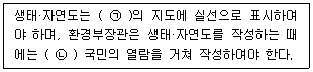
- ㉠ 5만분의 1이상, ㉡ 7일 이상
- ㉠ 5만분의 1이상, ㉡ 14일 이상
- ㉠ 2만5천분의 1이상, ㉡ 7일 이상
- ㉠ 2만5천분의 1이상, ㉡ 14일 이상
(정답률: 57%)
100. 자연환경보전법상 토지이용 및 개발계획의 수립이나 시행에 활용할 수 있도록 하기 위하여 자연환경 조사결과 등을 기초로 하여 전국의 자연환경을 1등급, 2등급, 3등급 권역 및 별도관리 지역으로 구분하여 작성한 것은?
- 생태·보전도
- 환경·생태도
- 자연·생태도
- 생태·자연도
(정답률: 60%)